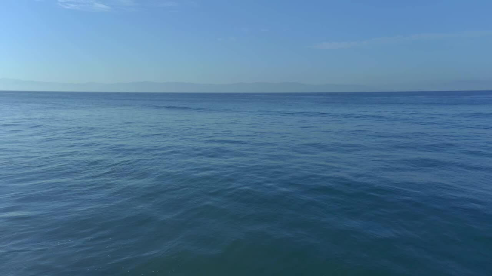

Some of the world's most extraordinary recipes have never been written down.
We're travelling across Siargao to preserve the stories, traditions and people behind its food — before they're lost.
This Made by Many / Mission 001 section is an in-progress program page — some content below (community profiles, funding figures) is still placeholder on the live site and kept as such here. See docs/CONTEXT.md.
It's memory. It's identity. It's migration. It's family. It's architecture. It's landscape. It's the ocean. It's the people.

Communities shouldn't depend on charity alone.
Your funds don't matter. Your participation does. Everyone becomes part of the mission.
MISSION LOG: A 3-step journey with the locals.
Below are our mission log cards. Every visit, meal and discovery. We update every new findings.
1 DAY – THE FIRST TABLE: One barangay, one table. We show how we can make it work.
July 5, 20263 DAYS – ISLAND TABLE: Multiple communities. Three barangays, more producers, more recipes. We learn and expand.
July 5, 20262 WEEKS – REDEFINING SIARGAO LOOP AND BOODLE FIGHT CULTURE IN THE PHILIPPINES: A full island expedition exploring communities, culture, circularity and participatory practices.
July 5, 2026Missions across the island:

"The woman who still cooks over fire."
Nanay Robelen, 94
Home Cook
"The fisherman who knows every tide."
Tatay Ben, 76
Fisherman
"The coconut farmer whose family has worked this land for generations."
Uncle Giting, 59
Farmer
"The architect designing with local materials."
Kuya Jojo, 37
Architect
This is where place-making comes in. The built environment. Culture. Materials. Craft — the same instincts that shape a kitchen shape a coastline, a market, a home. The mission becomes about preserving place, not just what's cooked, but where, how, and with whom.
WHY WE'RE BUILDING IT THIS WAY.
You're not funding one event. We're collaborating for the expedition to grow.
THE ROAD TO SIARGAO LOOP.
COMMUNITY 1,070 members
Mission 1 is currently in: Field Research & Development
Mission begins after R&D. Simple. Transparent. · TODAY — Field Work & Partnerships